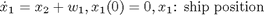
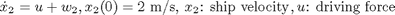
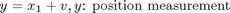
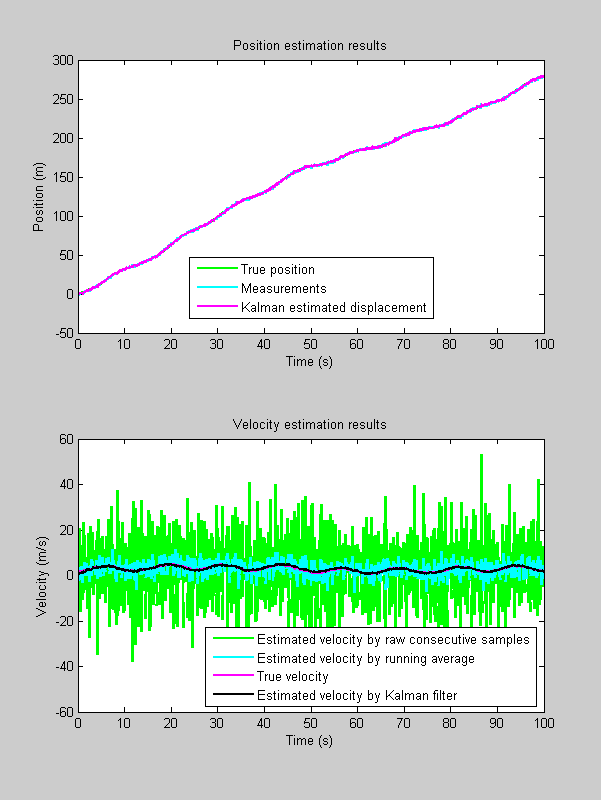
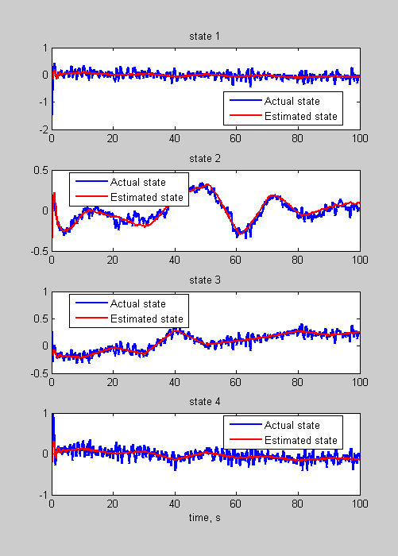

Learning the Kalman-Bucy Filter in Simulink
Examples to run the Simulink model kalmanbucy in the command window. By Yi Cao at Cranfield University on 28 January 2008
Contents
Example 1: Ship position esitimate



x0 = [0;2]; A = [0 1;0 0]; B = [0;1]; C = [1 0]; D = 0; Q = eye(2); R = 1; % Kalman-Bucy filter with initial estimation error x1 = [0;1]; A1 = A; B1 = B; C1 = C; D1 = D; Q1 = Q; R1 = R; P1 = 10*eye(2); % simulation configuration tspan = 0:0.1:100; u = sin(tspan'/2+randn(1001,1)); % u = randn(1001,1); [t,x,y1,y2,y3,y4]=sim('kalmanbucy',tspan,[],[tspan' u]); Xtrue = y1(:,1); %actual position Vtrue = y1(:,2); %actiual velocity Z = y2; %measured position X = y3; %Kalman filter output %%%%%%%%%%%%%%%%%%%%%%%%%%%%%%%%%%%%%%%% %%% Position analysis %%%%%%%%%%%%%%%%%% %%%%%%%%%%%%%%%%%%%%%%%%%%%%%%%%%%%%%%%% figure; set(gcf,'Position', [100 100 600 800]); subplot(211) plot(t,Xtrue,'g',t,Z,'c',t,X(:,1),'m','linewidth',2); title('Position estimation results'); xlabel('Time (s)'); ylabel('Position (m)'); legend('True position','Measurements','Kalman estimated displacement','Location','best'); %%%%%%%%%%%%%%%%%%%%%%%%%%%%%%%%%%%%%%%% %%% Velocity analysis %%%%%%%%%%%%%%%%%% %%%%%%%%%%%%%%%%%%%%%%%%%%%%%%%%%%%%%%%% % The instantaneous velocity as derived from 2 consecutive position % measurements InstantV = [10;diff(Z)./diff(t)]; % The instantaneous velocity as derived from running average with a window % of 5 samples from instantaneous velocity WindowSize = 5; InstantVAverage = filter(ones(1,WindowSize)/WindowSize,1,InstantV); % figure; subplot(212) plot(t,InstantV,'g',t,InstantVAverage,'c',t,Vtrue,'m',t,X(:,2),'k','linewidth',2); title('Velocity estimation results'); xlabel('Time (s)'); ylabel('Velocity (m/s)'); legend('Estimated velocity by raw consecutive samples','Estimated velocity by running average','True velocity','Estimated velocity by Kalman filter','Location','best');
Example 2: A 2-input 1-output 4-state system
A = [-1.4576 -0.3369 1.0503 3.7815
0.0979 -0.5998 0.2727 0.4077
1.7212 0.1711 -4.5537 1.1045
-3.5418 -0.3277 -1.7419 -0.9578];
B = [-0.1072 0
0 0.1000
-0.9640 0
0 0.1500];
C = [0.1685 -0.9595 -0.0755 -0.3771];
D = [0 0];
% process noise variance
Q=diag([0.5^2 0.2^2 0.3^2 0.5^2]);
% measurment noise variance
R=1;
% initial state
x0 = [-1.7073
0.2279
0.6856
-0.6368];
% Kalman-Bucy filter setting
% The same model
A1 =A;
B1 = B;
C1 = C;
D1 = D;
Q1 = Q;
R1 = R;
% zeros initial state estimate
x1 = zeros(4,1);
% initial covariance estimate
P1 = 10*eye(4);
% time span
tspan=0:0.1:100;
% input
u = randn(11,2);
% run the simulation
[t,x,y1,y2,y3,y4]=sim('kalmanbucy',tspan,[],[(0:10:100)' u]);
% Display results
figure
set(gcf,'Position',[100 100 500 700])
for k=1:4
subplot(4,1,k)
plot(t,y1(:,k),'b',t,y3(:,k),'r','linewidth',2);
legend('Actual state','Estimated state','Location','best')
title(sprintf('state %i',k))
end
xlabel('time, s')
